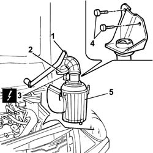

1048A10 AIR FILTER CASING - R.R.
- Path
- Procedures > 10 ENGINE > 1048 ENGINE AIR SUPPLY CIRCUIT > 1048A VACUUM AIR CIRCUIT > 1048A10 AIR FILTER CASING - R.R.
- Kind
- repair procedure (removal / refitting; the operation number is the code)
- Applies to
- engines: 2.4 JTD 10V; all production periods
- Interactive page
- https://sloeber94.github.io/elrnDB-lThss/en/#/75867
Applies to: engines: 2.4 JTD 10V; all production periods
 Removing
Removing
 Refitting
RefittingSee in Op. 7040D50 ENGINE COMPARTMENT UPPER SOUND INSULATION SHIELD - R.R.
See in Op. 1048A21 Cold AIR INTAKE PIPE for air filter - R.R.
1. Disconnect the engine oil vapour recirculation pipe from the turbocharger air intake hose.
2. Disconnect the hose from the rigid section of the turbocharger air intake pipe.
3. Disconnect the electrical connection for the air flow meter.
4. Undo the bolts fixing the filter casing mounting bracket.
5. Remove the air filter casing releasing the rubber buffers from the mounting.

Applies to: engines: 2.4 JTD 10V; all production periods
Refitting
Removing- Fit the air filter casing taking care to fit the rubber pins on the mounting.
- Tighten the bolts fixing the mounting bracket to the bodyshell.
- Connect the electrical connection for the air flow meter.
- Connect the hose to the rigid section of the turbocharger air intake pipe.
- Connect the engine oil vapour recirculation pipe to the turbocharger air intake hose.
See in Op. 1048A21 Cold AIR INTAKE PIPE for air filter - R.R.
See in Op. 7040D50 ENGINE COMPARTMENT UPPER SOUND INSULATION SHIELD - R.R.
Topics linked from this page (2)
- 1048A21 Cold AIR INTAKE PIPE for air filter - R.R.
- 7040D50 ENGINE COMPARTMENT UPPER SOUND INSULATION SHIELD - R.R.